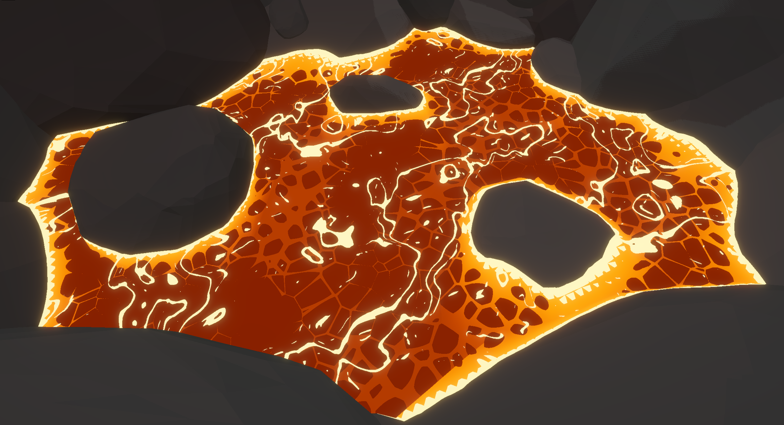
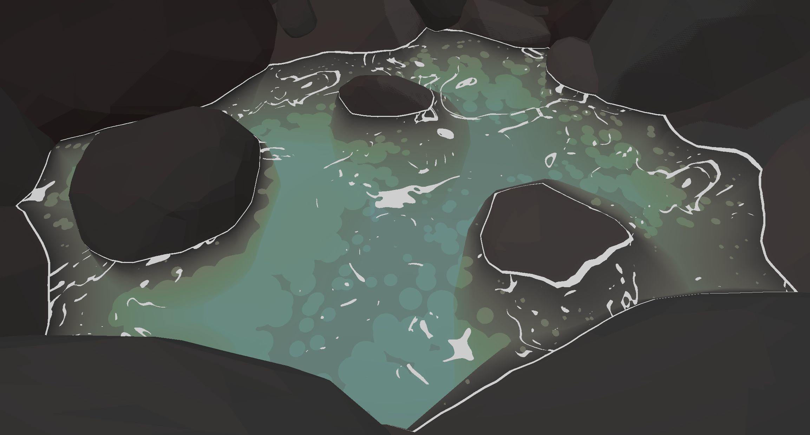
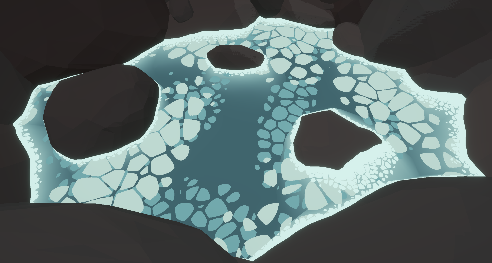
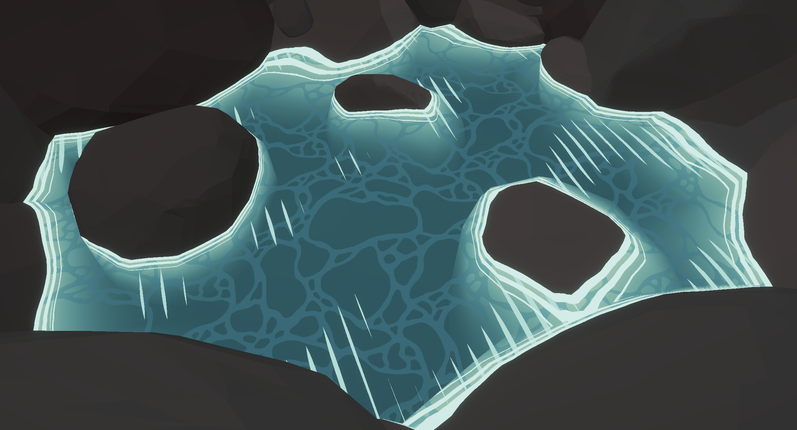
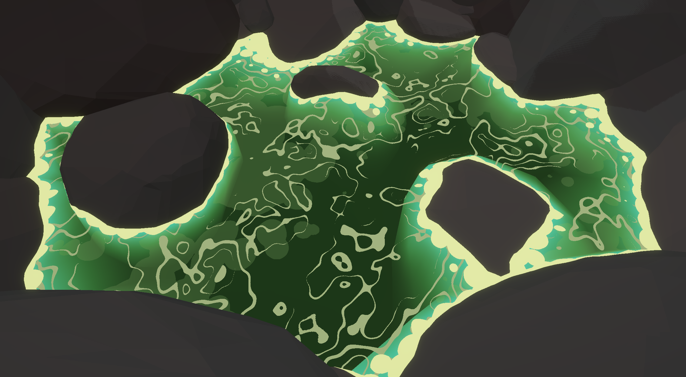
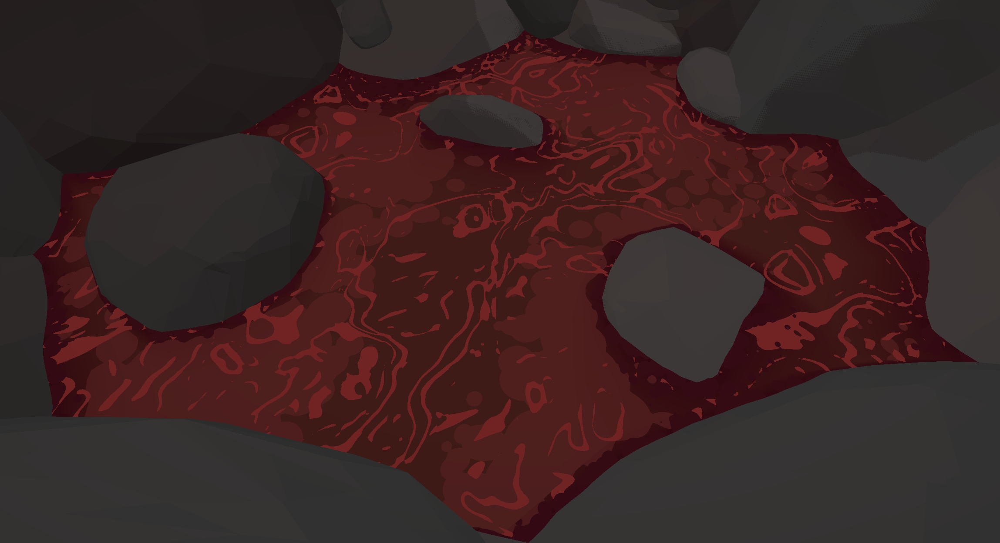
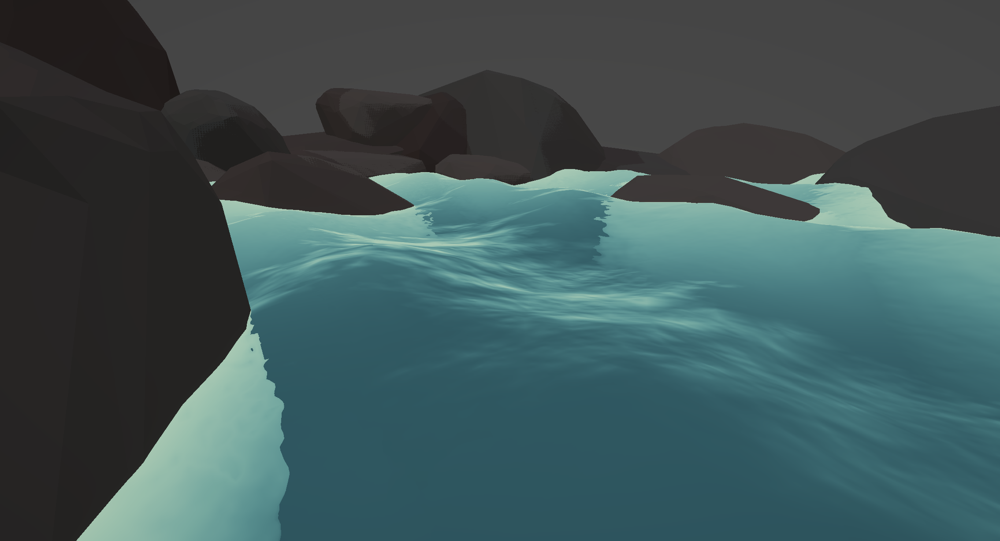
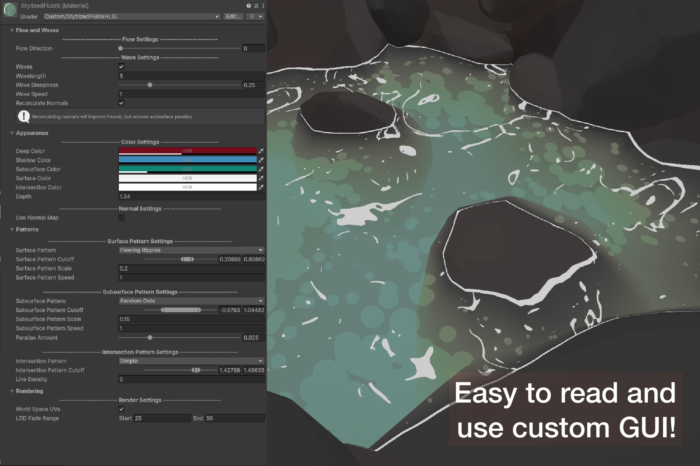

Stylized Fluids
A stylized water shader built in Unity using HLSL

Overview - Tons of stylized fluid shaders out there limit you with their choice of patterns. This shader exists as a solution to that problem. In this shader, I provide the ability for the user to select which pattern they want to use for the surface, intersections, and subsurface. You can even mix my built-in patterns with your own pattern textures, allowing for infinite possibilities.
Version 1.0.0 (Initial Release)
- Tri-layered patterns
- Depth and transparency
- Gerstner Waves displacement
- HDR Colors & HSV Blending
- Custom Inspector GUI
- Custom pattern and normal texture support
- Dynamic refraction
Future Roadmap
- Dynamic lighting configurations & specular reflections
- Distance-based tessellation
- Physical object fluid interactions & ripple creation

HDR Colors design

Depth and transparency

HSV Blending

Custom Pattern Texture Support

6-8 available patterns per layer

Minimal Variants/Branches
Normal Blending & Displacements

- Custom normal texture support for personalized wave distortion.
- Refractions calculated dynamically based on the normal offset data.
- Mathematical Gerstner Waves implemented directly within the vertex shader.
- Integrated Fresnel math to handle edge opacity and reflection falloff at grazing angles.
Custom Tooling & Inspector GUI

- Dropdown menus map intuitively to integer-defined pattern selections.
- Fine-tuned sliders control edge clipping and layer sharpness thresholds.
- Context-aware shader keywords toggle, hiding unused properties to clean up the workspace.
Tech Art Optimization: RGB to HSV color conversions are handled entirely on the CPU side via the custom Editor GUI script, saving valuable GPU math cycles at runtime by preventing instruction overhead inside the pixel shader.